Este documento adapta el script original de Multiple Correspondence Analysis (ACM) a formato Quarto para uso docente. Se ha respetado al máximo la estructura original del script, pero añadiendo comentarios y explicaciones para facilitar su uso en clase, laboratorio o autoaprendizaje.
El objetivo de este material es que el estudiante pueda:
entender qué es un ACM,
ejecutar el análisis paso a paso,
interpretar los resultados principales,
distinguir entre variables activas, suplementarias e individuos suplementarios.
2 Carga de librerías
# FactoMineR implementa el análisis de correspondencias múltiples# factoextra facilita la visualización e interpretación de los resultados# corrplot permite representar matrices de contribución o calidad de representaciónlist.of.packages <-c("FactoMineR", "factoextra", "corrplot")# Detectamos qué paquetes no están instalados.new.packages <- list.of.packages[!(list.of.packages %in%installed.packages()[, "Package"])]# Instalamos los que falten.if (length(new.packages) >0) {install.packages(new.packages)}# Cargamos todas las librerías en memoria.lapply(list.of.packages, require, character.only =TRUE)
[[1]]
[1] TRUE
[[2]]
[1] TRUE
[[3]]
[1] TRUE
# Eliminamos objetos auxiliares del entorno.rm(list.of.packages, new.packages)
3 Dataset: poison
Los datos utilizados corresponden a una encuesta realizada a un grupo de escolares que sufrieron una intoxicación alimentaria. Se les preguntó por sus síntomas y por los alimentos consumidos.
# Cargamos el conjunto de datos de ejemplo incluido en FactoMineRdata(poison)# Dimensión del dataset: número de filas y columnasdim(poison)
[1] 55 15
# Estructura de los datos: tipos de variablesstr(poison)
Age Time Sick Sex Nausea Vomiting
Min. : 4.00 Min. : 0.00 Sick_n:17 F:28 Nausea_n:43 Vomit_n:33
1st Qu.: 6.00 1st Qu.: 0.00 Sick_y:38 M:27 Nausea_y:12 Vomit_y:22
Median : 8.00 Median :12.00
Mean :16.93 Mean :10.16
3rd Qu.:10.00 3rd Qu.:16.50
Max. :88.00 Max. :22.00
Abdominals Fever Diarrhae Potato Fish Mayo
Abdo_n:18 Fever_n:20 Diarrhea_n:20 Potato_n: 3 Fish_n: 1 Mayo_n:10
Abdo_y:37 Fever_y:35 Diarrhea_y:35 Potato_y:52 Fish_y:54 Mayo_y:45
Courgette Cheese Icecream
Courg_n: 5 Cheese_n: 7 Icecream_n: 4
Courg_y:50 Cheese_y:48 Icecream_y:51
4 Subsetting de variables para el ACM
En este ejemplo se seleccionan únicamente algunas variables categóricas activas para realizar el análisis ACM.
# Seleccionamos los individuos 1:55 y las variables 5:15# Estas serán las variables activas del análisispoison.active <- poison[1:55, 5:15]
5 Inspección previa de frecuencias
Antes de ejecutar un ACM, conviene revisar si existen categorías con frecuencias muy bajas. Estas categorías raras pueden distorsionar el análisis y, en algunos casos, debería plantearse su eliminación o agrupación.
# Representamos la frecuencia de cada variable categóricafor (i in1:ncol(poison.active)) {plot( poison.active[, i],main =colnames(poison.active)[i],ylab ="Count",col ="steelblue",las =2 )}
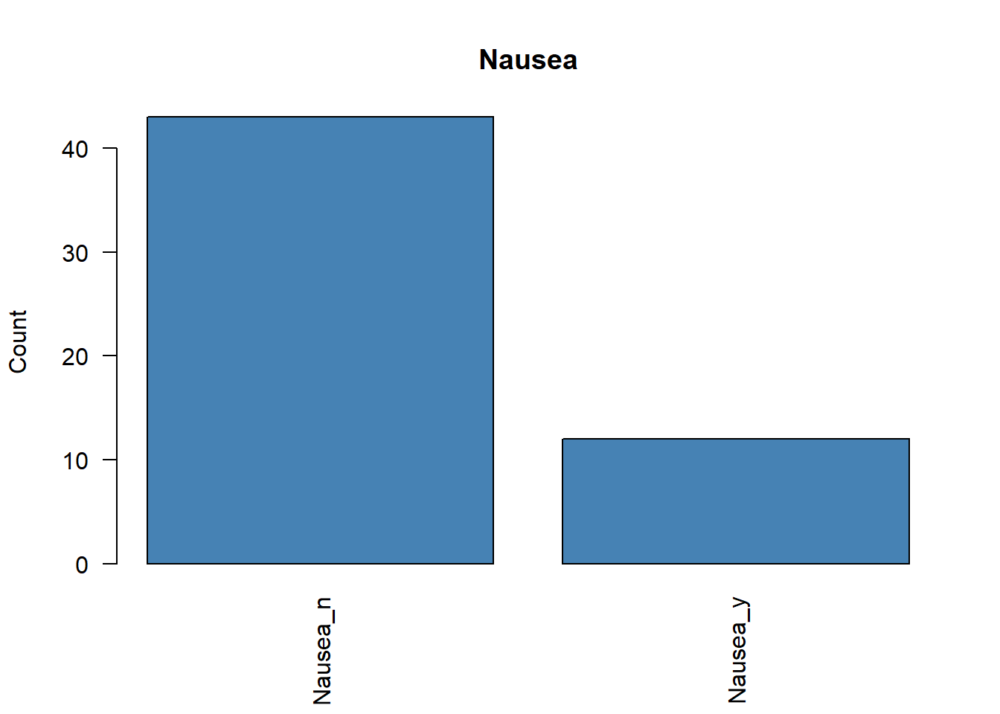
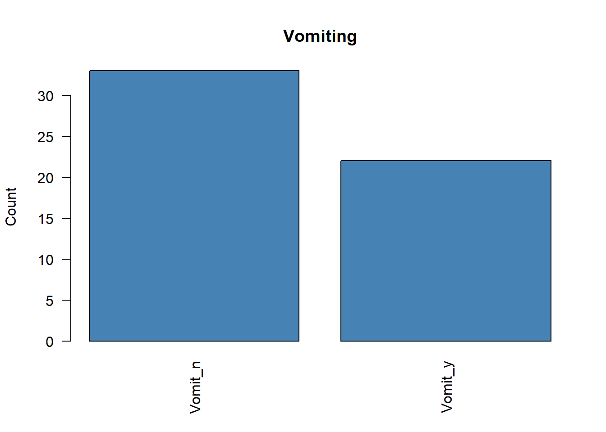
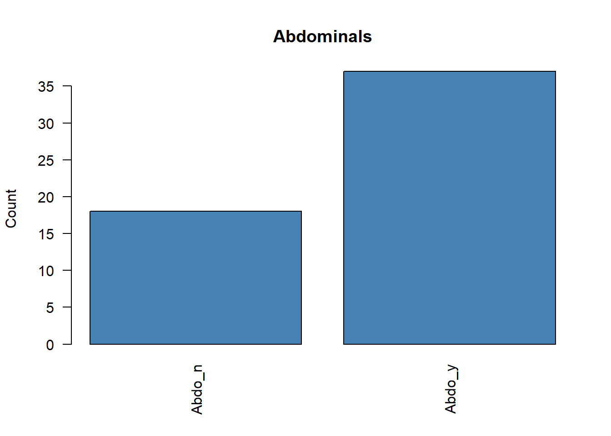
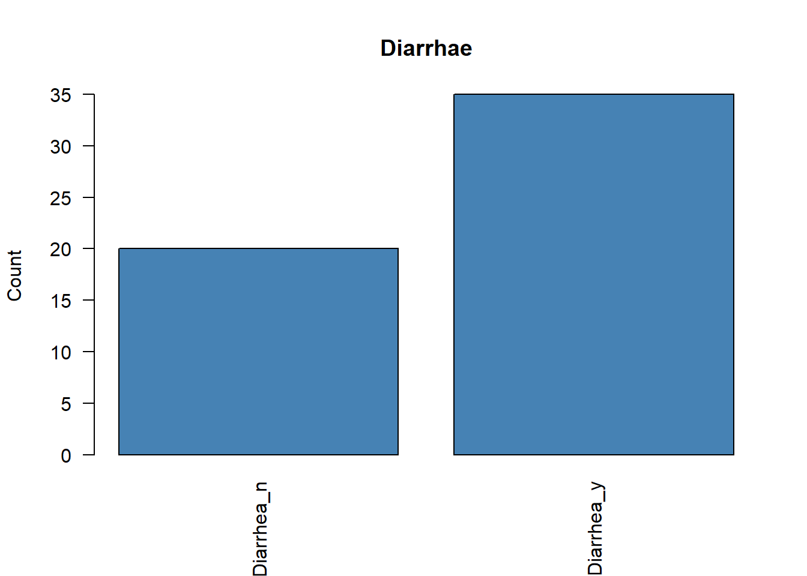
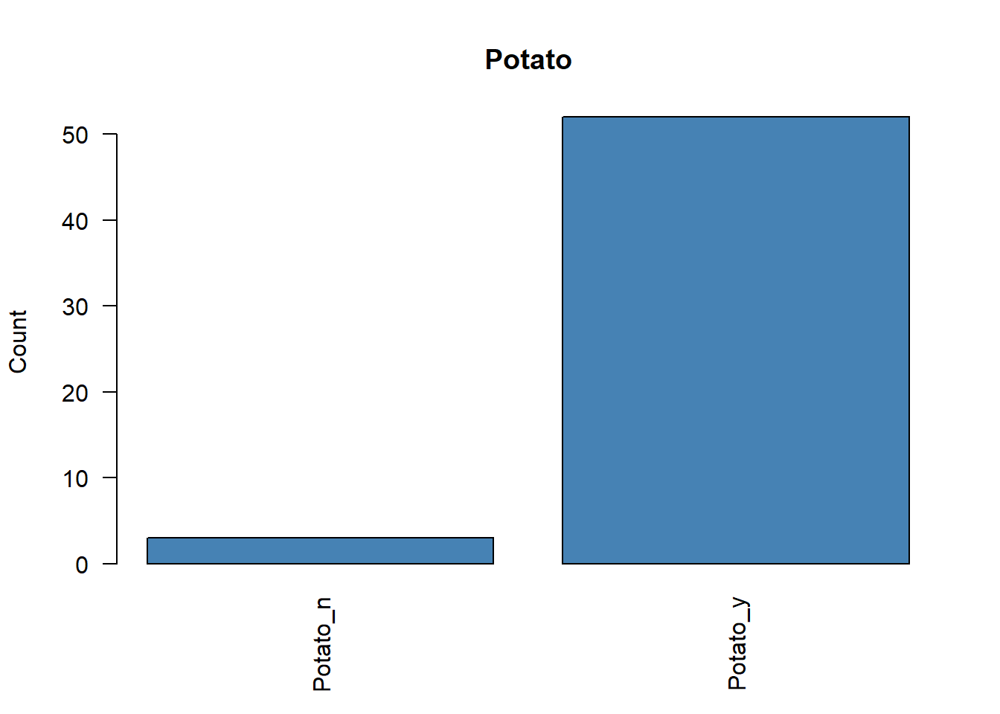
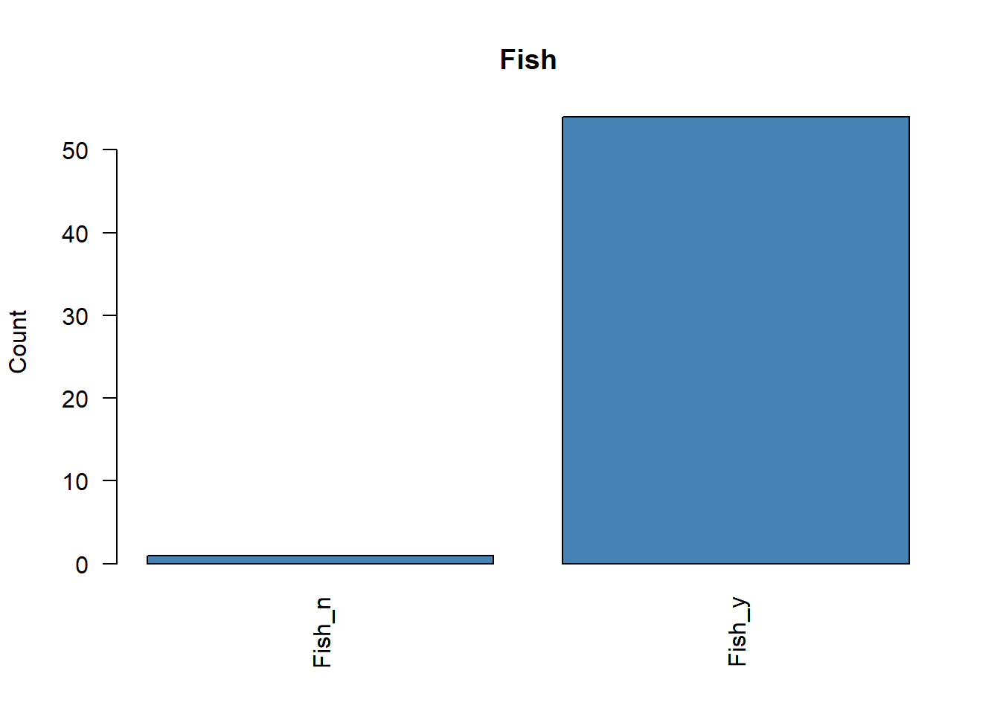
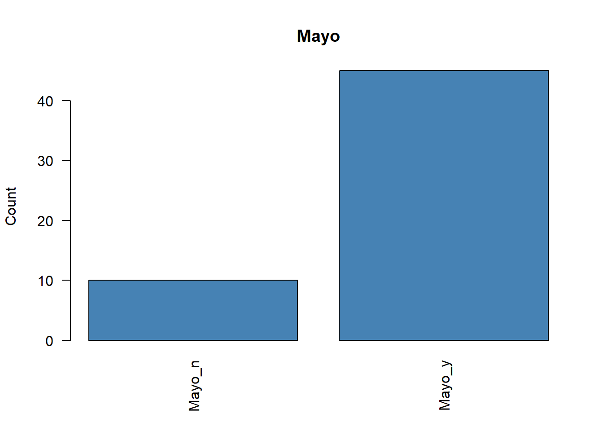
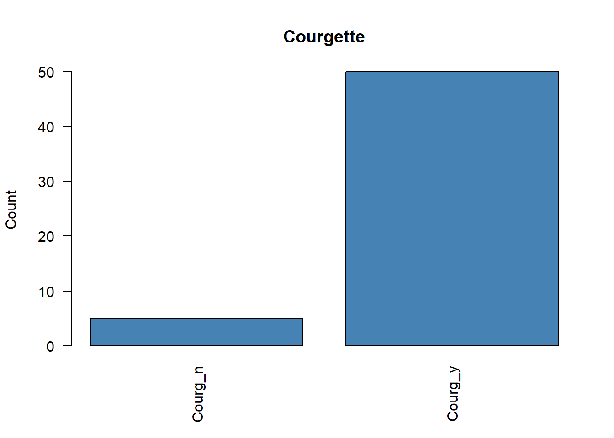
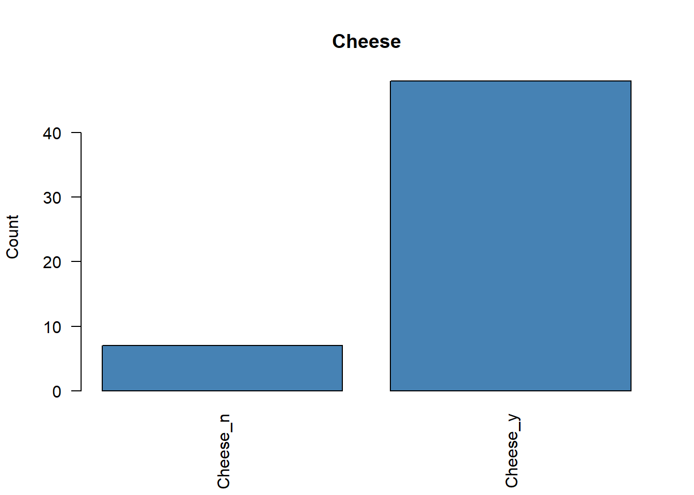
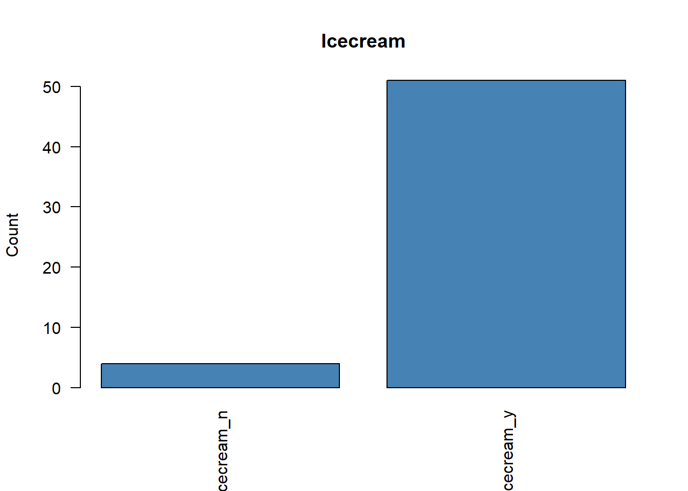
6 Función ACM
A continuación aplicamos el análisis de correspondencias múltiples.
# Consultamos la ayuda de la función ACMhelp(ACM)
No documentation for 'ACM' in specified packages and libraries:
you could try '??ACM'
# Ajustamos el modelo ACM usando el método Indicator# graph = FALSE evita que se dibujen gráficos automáticos al ejecutar el modelores.mca <-MCA(poison.active, method ="Indicator", graph =FALSE)# Alternativamente podría utilizarse el método Burt# res.mca2 <- ACM(poison.active, method = "Burt", graph = FALSE)# Imprimimos el resumen del resultadoprint(res.mca)
**Results of the Multiple Correspondence Analysis (MCA)**
The analysis was performed on 55 individuals, described by 11 variables
*The results are available in the following objects:
name description
1 "$eig" "eigenvalues"
2 "$var" "results for the variables"
3 "$var$coord" "coord. of the categories"
4 "$var$cos2" "cos2 for the categories"
5 "$var$contrib" "contributions of the categories"
6 "$var$v.test" "v-test for the categories"
7 "$var$eta2" "coord. of variables"
8 "$ind" "results for the individuals"
9 "$ind$coord" "coord. for the individuals"
10 "$ind$cos2" "cos2 for the individuals"
11 "$ind$contrib" "contributions of the individuals"
12 "$call" "intermediate results"
13 "$call$marge.col" "weights of columns"
14 "$call$marge.li" "weights of rows"
7 Resultados del ACM: visualización e interpretación
7.1 Paso 1. Eigenvalues e inercia explicada
Los eigenvalues permiten estudiar cuánta variabilidad explica cada dimensión. Esto es fundamental para decidir cuántas dimensiones conservar.
# Extraemos eigenvalues e inercia explicadaeig.val <-get_eigenvalue(res.mca)eig.val
# Scree plot para visualizar la importancia relativa de las dimensionesfviz_screeplot(res.mca, addlabels =TRUE, ylim =c(0, 45))
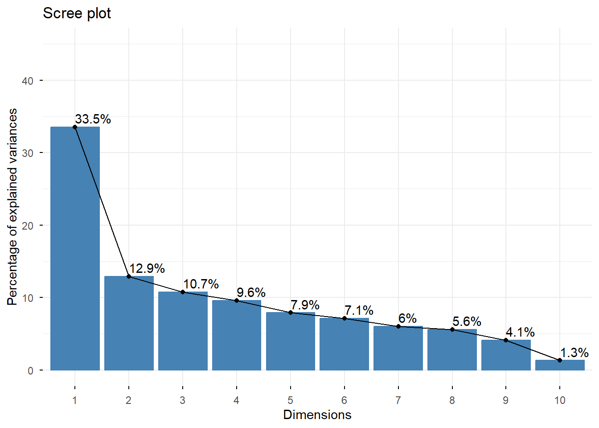
7.1.1 Criterio de selección de dimensiones
Para method = "Indicator" se suele utilizar:
el método del codo,
o bien conservar dimensiones con eigenvalue > 1/p.
Para method = "Burt" se suele usar:
el método del codo,
o una inercia acumulada superior al 75%–80%.
En este caso:
p = 11, por tanto el umbral 1/p = 1/11 = 0.0909.
Aunque podrían analizarse más dimensiones, en este script se trabajará con 2 dimensiones.
Desde el punto de vista docente, conviene completar después la interpretación incorporando también la tercera dimensión.
7.2 Paso 2. Revisión conjunta de individuos y variables
Este paso resume en una sola representación la posición relativa de individuos y categorías.
# Biplot conjunto de individuos y categorías# Se deja comentado para mantener la estructura del script original# fviz_mca_biplot(res.mca, repel = TRUE, gtheme = theme_minimal())
8 Paso 3. Análisis de variables
Primero extraemos la información asociada a las categorías de las variables.
# Extraemos resultados asociados a las variables del ACMvar <-get_mca_var(res.mca)var
Multiple Correspondence Analysis Results for variables
===================================================
Name Description
1 "$coord" "Coordinates for categories"
2 "$cos2" "Cos2 for categories"
3 "$contrib" "contributions of categories"
8.1 Pseudo-correlación entre variables y dimensiones
Esta representación ayuda a estudiar la asociación entre categorías y dimensiones principales.
# Matriz de calidad de representación de las categoríascorrplot(var$cos2, is.corr =FALSE)
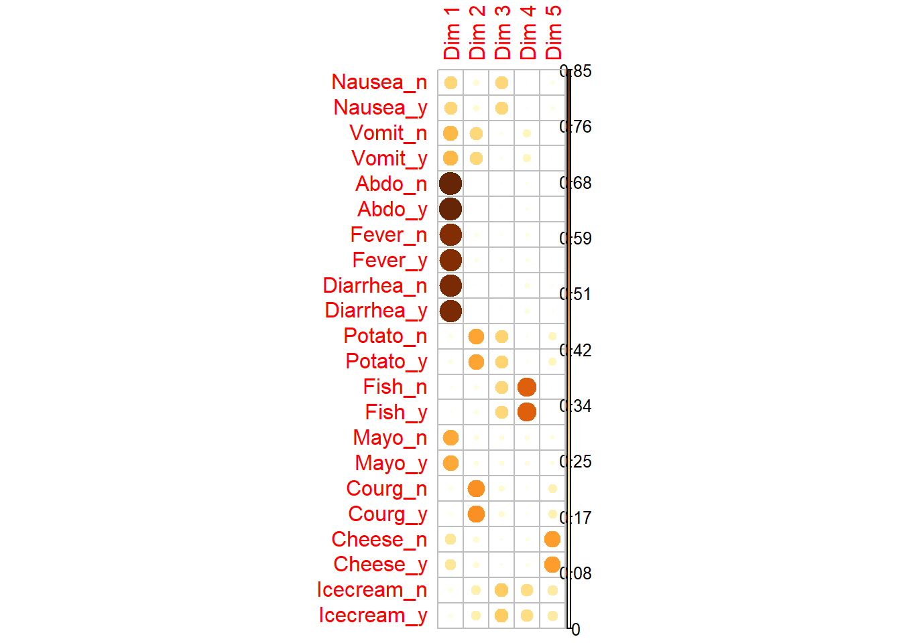
# Visualización específica de cos2 para variables en los ejes 1 y 2fviz_cos2(res.mca, choice ="var", axes =1:2)
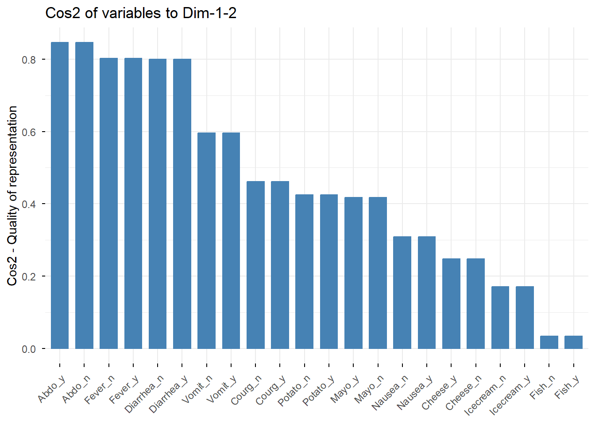
8.3.1 Interpretación docente
Obsérvese que algunas categorías como Fish_n, Fish_y, Icecream_n e Icecream_y no quedan especialmente bien representadas en las dos primeras dimensiones.
Eso implica que:
su posición en el plano debe interpretarse con cautela,
una solución de mayor dimensionalidad podría ser más adecuada para describirlas correctamente.
8.4 Contribución de las categorías a las dimensiones
Las categorías con mayor contribución son las que más ayudan a definir cada dimensión factorial.
# Categorías que más contribuyen a la dimensión 1fviz_contrib(res.mca, choice ="var", axes =1, top =15)
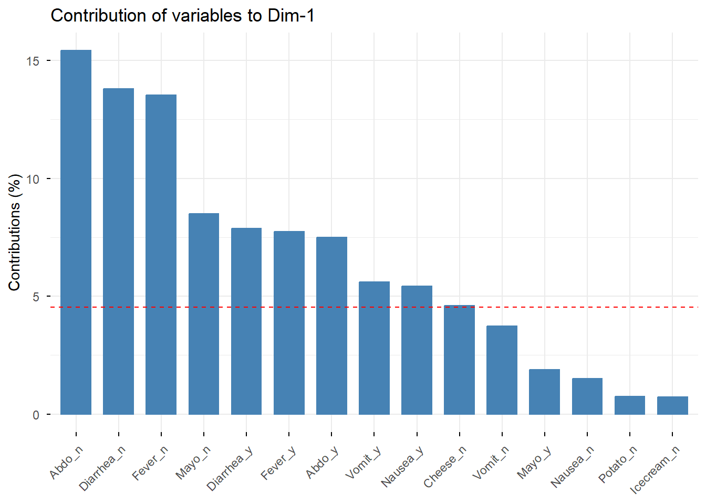
# Categorías que más contribuyen a la dimensión 2fviz_contrib(res.mca, choice ="var", axes =2, top =15)
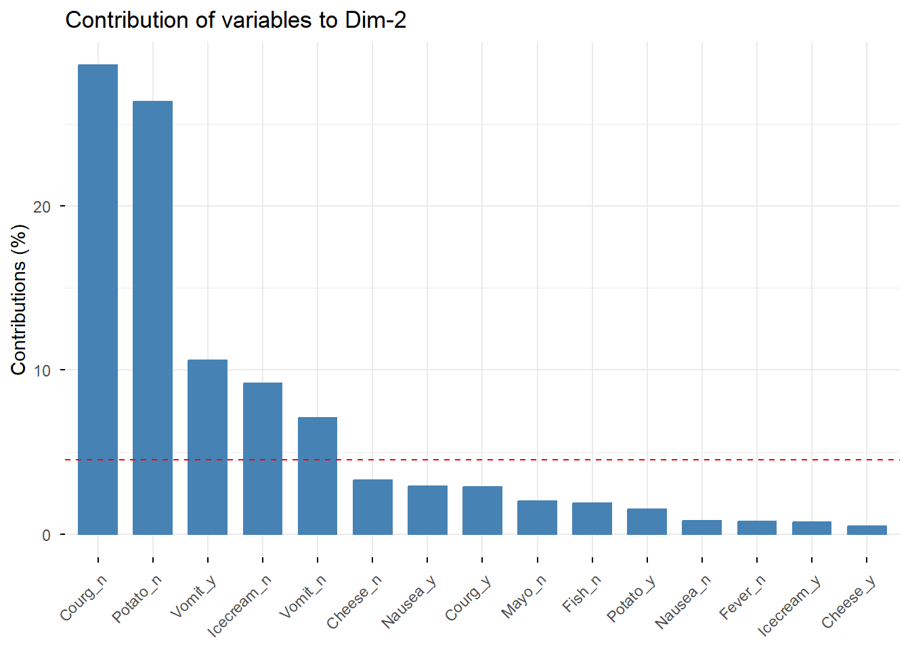
# Contribución total a las dimensiones 1 y 2fviz_contrib(res.mca, choice ="var", axes =1:2, top =15)
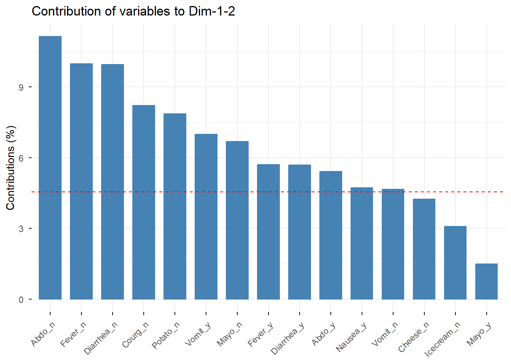
# Representación del mapa de categorías coloreado por contribuciónfviz_mca_var( res.mca,col.var ="contrib",gradient.cols =c("#00AFBB", "#E7B800", "#FC4E07"),repel =TRUE,ggtheme =theme_minimal())
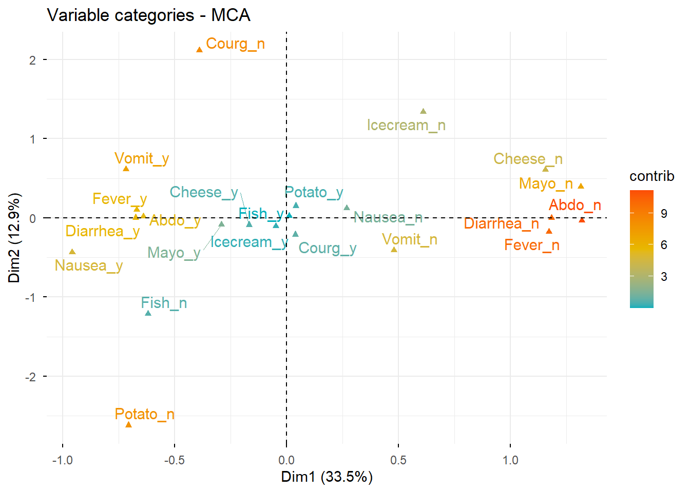
# Matriz de contribucionescorrplot(var$contrib, is.corr =FALSE)
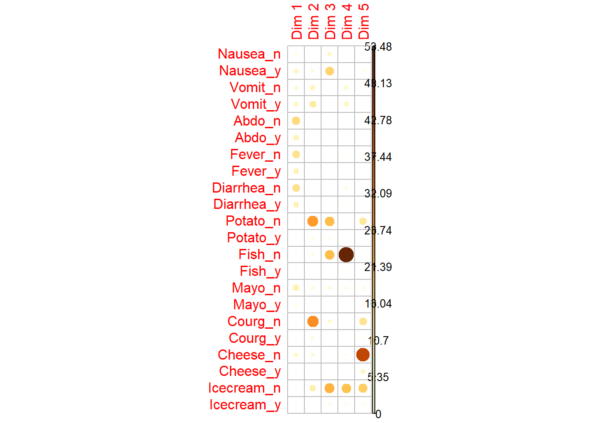
8.4.1 Nota importante
Antes de pasar al análisis de individuos, conviene decidir la latencia o número de dimensiones que se considerarán relevantes para la interpretación final.
9 Paso 4. Análisis de individuos
Ahora estudiamos la representación de los individuos en el espacio factorial.
# Extraemos la información asociada a los individuosind <-get_mca_ind(res.mca)ind
Multiple Correspondence Analysis Results for individuals
===================================================
Name Description
1 "$coord" "Coordinates for the individuals"
2 "$cos2" "Cos2 for the individuals"
3 "$contrib" "contributions of the individuals"
9.1 Calidad de representación y contribución de individuos
Estas variables e individuos no se utilizan para construir las dimensiones principales. Sus coordenadas se proyectan a posteriori a partir de la solución obtenida con los elementos activos.
En este ejemplo:
quanti.sup = 1:2 corresponde a las variables continuas age y time,
quali.sup = 3:4 corresponde a variables cualitativas como Sick y Sex,
ind.sup = 53:55 indica que esos individuos se tratarán como suplementarios.
# Nuevo ACM incluyendo variables suplementarias e individuos suplementariosres.mca <-MCA( poison,ind.sup =53:55,quanti.sup =1:2,quali.sup =3:4,graph =FALSE)
11.1 Resultados suplementarios
# Categorías de variables cualitativas suplementariasres.mca$quali.sup
$coord
Dim 1 Dim 2 Dim 3 Dim 4 Dim 5
Sick_n 1.41809140 0.0020394048 0.13199139 -0.016036841 -0.08354663
Sick_y -0.63026284 -0.0009064021 -0.05866284 0.007127485 0.03713184
F -0.03108147 0.1123143957 0.05033124 -0.055927173 -0.06832928
M 0.03356798 -0.1212995474 -0.05435774 0.060401347 0.07379562
$cos2
Dim 1 Dim 2 Dim 3 Dim 4 Dim 5
Sick_n 0.893770319 1.848521e-06 0.007742990 0.0001143023 0.003102240
Sick_y 0.893770319 1.848521e-06 0.007742990 0.0001143023 0.003102240
F 0.001043342 1.362369e-02 0.002735892 0.0033780765 0.005042401
M 0.001043342 1.362369e-02 0.002735892 0.0033780765 0.005042401
$v.test
Dim 1 Dim 2 Dim 3 Dim 4 Dim 5
Sick_n 6.7514655 0.009709509 0.6284047 -0.07635063 -0.3977615
Sick_y -6.7514655 -0.009709509 -0.6284047 0.07635063 0.3977615
F -0.2306739 0.833551410 0.3735378 -0.41506855 -0.5071119
M 0.2306739 -0.833551410 -0.3735378 0.41506855 0.5071119
$eta2
Dim 1 Dim 2 Dim 3 Dim 4 Dim 5
Sick 0.893770319 1.848521e-06 0.007742990 0.0001143023 0.003102240
Sex 0.001043342 1.362369e-02 0.002735892 0.0033780765 0.005042401
$coord
Dim 1 Dim 2 Dim 3 Dim 4 Dim 5
Age 0.003934896 -0.00741340 -0.26494536 0.20015501 0.02928483
Time -0.838158507 -0.08330586 -0.08718851 -0.08421599 -0.02316931
# Individuos suplementariosres.mca$ind.sup
$coord
Dim 1 Dim 2 Dim 3 Dim 4 Dim 5
53 1.0835684 0.5172478 0.5794063 0.5390903 0.4553650
54 -0.1249473 0.1417271 -0.1765234 -0.1526587 -0.2779565
55 -0.4315948 0.1270468 -0.2071580 -0.1186804 -0.1891760
$cos2
Dim 1 Dim 2 Dim 3 Dim 4 Dim 5
53 0.36304957 0.08272764 0.10380536 0.08986204 0.06411692
54 0.03157652 0.04062716 0.06302535 0.04713607 0.15626590
55 0.50232519 0.04352713 0.11572730 0.03798314 0.09650827
# Correlación entre variables (activas y suplementarias) y dimensionesfviz_mca_var(res.mca, choice ="mca.cor", repel =TRUE)
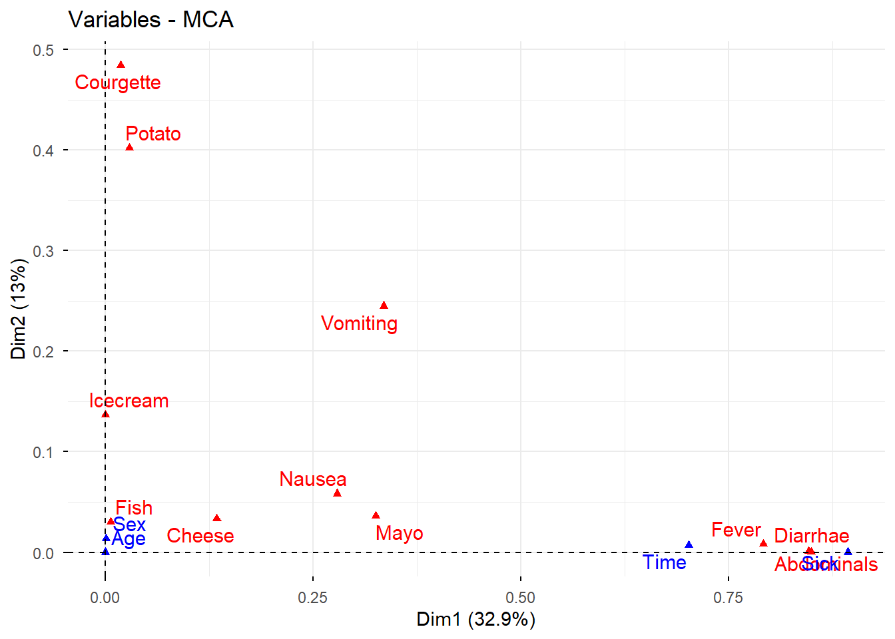
# Mapa de variablesfviz_mca_var( res.mca,repel =TRUE,ggtheme =theme_minimal())
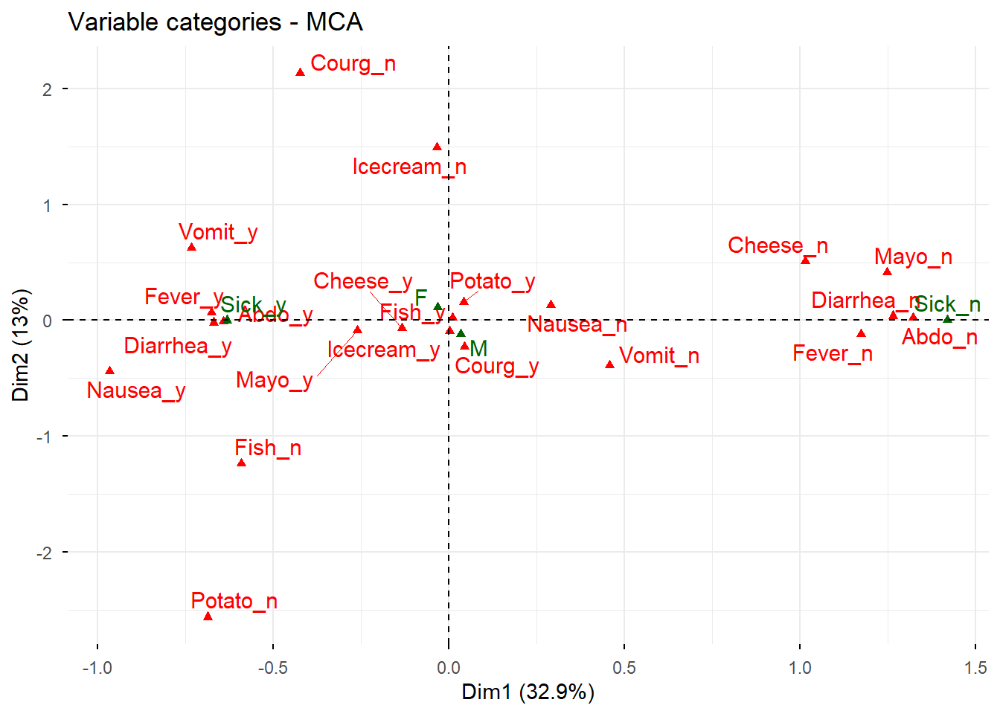
# Representación de variables cuantitativas suplementariasfviz_mca_var( res.mca,choice ="quanti.sup",ggtheme =theme_minimal())
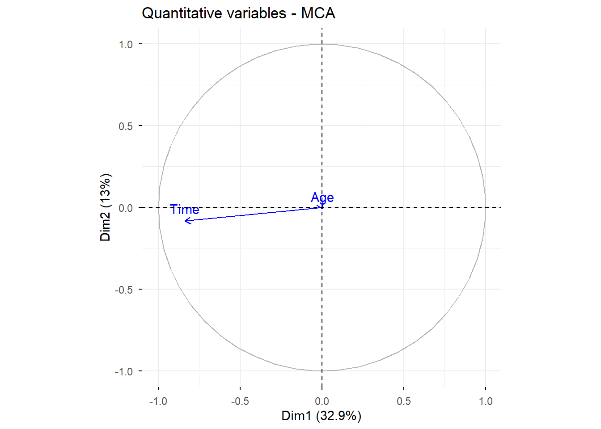
# Representación de individuos suplementariosfviz_mca_ind( res.mca,label ="ind.sup",ggtheme =theme_minimal())
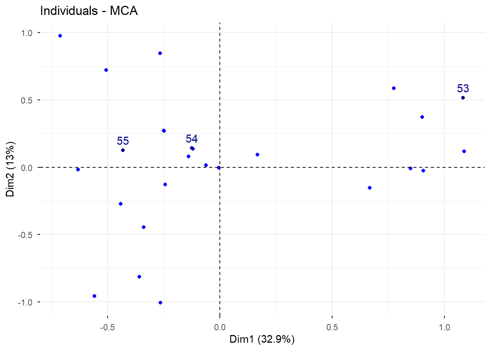
# Top 5 individuos y categorías con mayor contribuciónfviz_mca_biplot( res.mca,select.ind =list(contrib =5),select.var =list(contrib =5),ggtheme =theme_minimal())
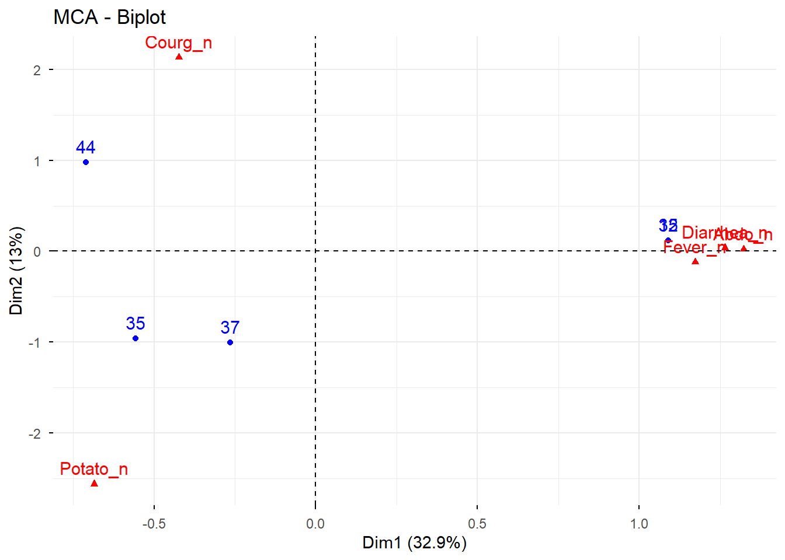
12 Resumen final
# Ejecución final del ACM con gráficos automáticos activadosres.mca <-MCA( poison,ind.sup =53:55,quanti.sup =1:2,quali.sup =3:4,graph =TRUE)
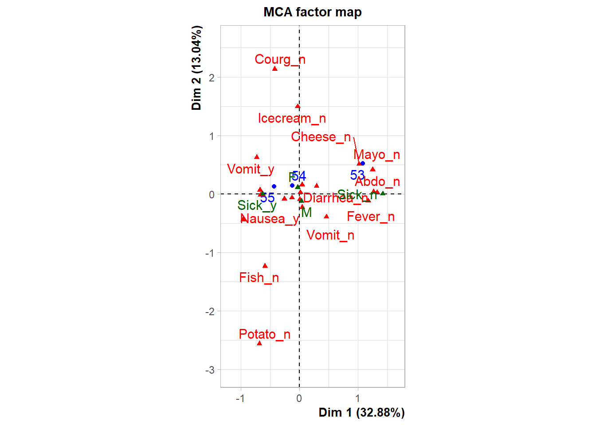
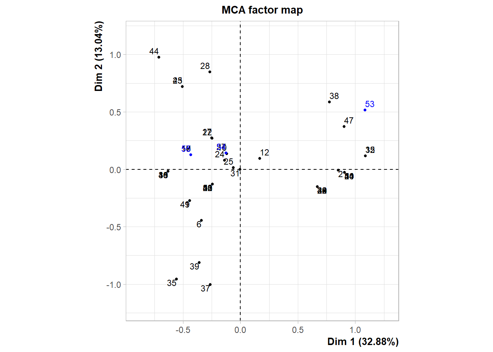
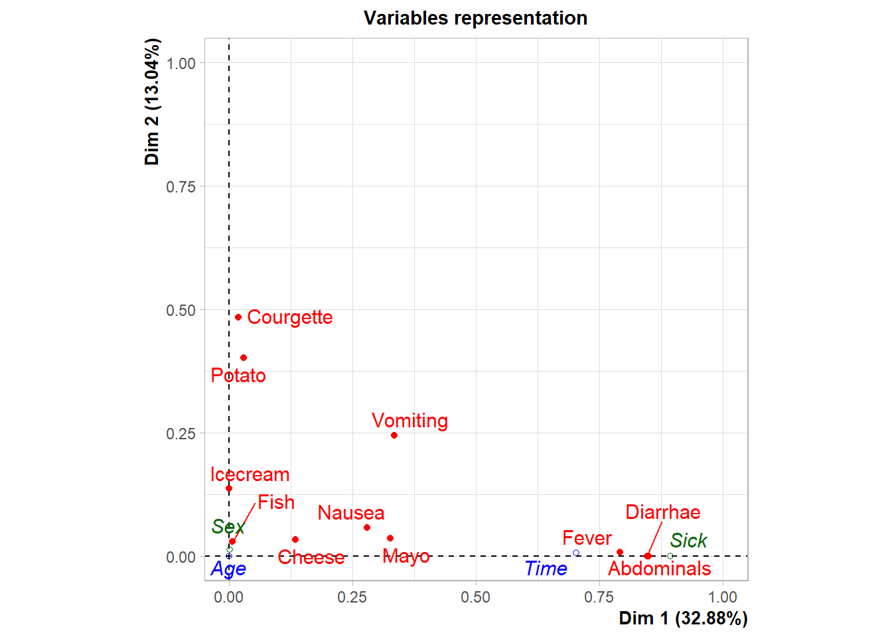
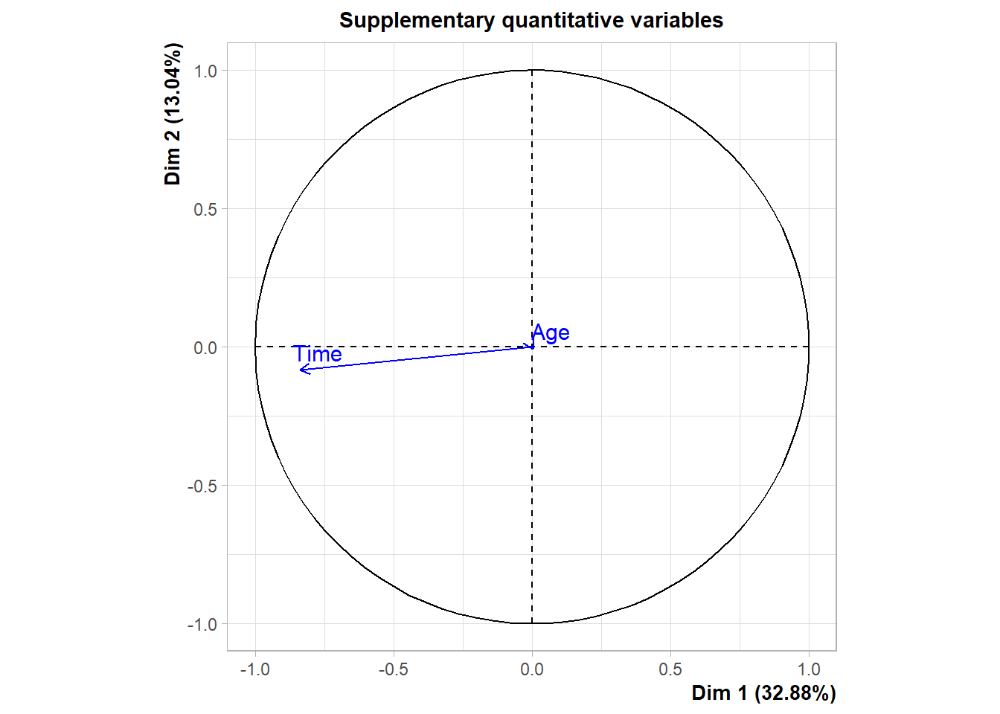
12.1 Comentario final
Una comprobación muy útil consiste en contrastar los resultados obtenidos con:
el método basado en la tabla disyuntiva completa (Indicator),
y el método basado en la tabla de Burt.
En general, ambos enfoques ofrecen resultados muy similares o equivalentes desde el punto de vista interpretativo.
13 Bibliografía y apoyo teórico
Greenacre, M. (2017). Correspondence Analysis in Practice.
Husson, F., Lê, S., & Pagès, J. (2017). Exploratory Multivariate Analysis by Example Using R.
Documentación oficial de FactoMineR.
Documentación oficial de factoextra.
Aquesta web està creada por Dante Conti y Sergi Ramírez, (c) 2026
Source Code
---title: "ACM: Multiple Correspondence Analysis"author: - "Sergi Ramírez" - "Dante Conti" - "IDEAI - UPC (c)"date: "`r Sys.Date()`"date-modified: "`r Sys.Date()`"toc: true# language: esnumber-sections: trueformat: html: theme: light: cerulean dark: darkly toc: true number-sections: true code-tools: trueeditor: visualexecute: echo: true warning: false message: false# freeze: auto---# IntroducciónEste documento adapta el script original de **Multiple Correspondence Analysis (ACM)** a formato **Quarto** para uso docente. Se ha respetado al máximo la estructura original del script, pero añadiendo comentarios y explicaciones para facilitar su uso en clase, laboratorio o autoaprendizaje.El objetivo de este material es que el estudiante pueda:- entender qué es un ACM,- ejecutar el análisis paso a paso,- interpretar los resultados principales,- distinguir entre variables activas, suplementarias e individuos suplementarios.# Carga de librerías```{r}# FactoMineR implementa el análisis de correspondencias múltiples# factoextra facilita la visualización e interpretación de los resultados# corrplot permite representar matrices de contribución o calidad de representaciónlist.of.packages <-c("FactoMineR", "factoextra", "corrplot")# Detectamos qué paquetes no están instalados.new.packages <- list.of.packages[!(list.of.packages %in%installed.packages()[, "Package"])]# Instalamos los que falten.if (length(new.packages) >0) {install.packages(new.packages)}# Cargamos todas las librerías en memoria.lapply(list.of.packages, require, character.only =TRUE)# Eliminamos objetos auxiliares del entorno.rm(list.of.packages, new.packages)```# Dataset: `poison`Los datos utilizados corresponden a una encuesta realizada a un grupo de escolares que sufrieron una intoxicación alimentaria. Se les preguntó por sus síntomas y por los alimentos consumidos.```{r}# Cargamos el conjunto de datos de ejemplo incluido en FactoMineRdata(poison)# Dimensión del dataset: número de filas y columnasdim(poison)# Estructura de los datos: tipos de variablesstr(poison)# Resumen general de las variablessummary(poison)```# Subsetting de variables para el ACMEn este ejemplo se seleccionan únicamente algunas variables categóricas activas para realizar el análisis ACM.```{r}# Seleccionamos los individuos 1:55 y las variables 5:15# Estas serán las variables activas del análisispoison.active <- poison[1:55, 5:15]```# Inspección previa de frecuenciasAntes de ejecutar un ACM, conviene revisar si existen categorías con frecuencias muy bajas. Estas categorías raras pueden distorsionar el análisis y, en algunos casos, debería plantearse su eliminación o agrupación.```{r}# Representamos la frecuencia de cada variable categóricafor (i in1:ncol(poison.active)) {plot( poison.active[, i],main =colnames(poison.active)[i],ylab ="Count",col ="steelblue",las =2 )}```# Función ACMA continuación aplicamos el análisis de correspondencias múltiples.```{r}# Consultamos la ayuda de la función ACMhelp(ACM)# Ajustamos el modelo ACM usando el método Indicator# graph = FALSE evita que se dibujen gráficos automáticos al ejecutar el modelores.mca <-MCA(poison.active, method ="Indicator", graph =FALSE)# Alternativamente podría utilizarse el método Burt# res.mca2 <- ACM(poison.active, method = "Burt", graph = FALSE)# Imprimimos el resumen del resultadoprint(res.mca)```# Resultados del ACM: visualización e interpretación## Paso 1. Eigenvalues e inercia explicadaLos eigenvalues permiten estudiar cuánta variabilidad explica cada dimensión. Esto es fundamental para decidir cuántas dimensiones conservar.```{r}# Extraemos eigenvalues e inercia explicadaeig.val <-get_eigenvalue(res.mca)eig.val``````{r}# Scree plot para visualizar la importancia relativa de las dimensionesfviz_screeplot(res.mca, addlabels =TRUE, ylim =c(0, 45))```### Criterio de selección de dimensiones- Para `method = "Indicator"` se suele utilizar: - el método del codo, - o bien conservar dimensiones con eigenvalue \> 1/p.- Para `method = "Burt"` se suele usar: - el método del codo, - o una inercia acumulada superior al 75%–80%.En este caso:- `p = 11`, por tanto el umbral `1/p = 1/11 = 0.0909`.- Aunque podrían analizarse más dimensiones, en este script se trabajará con **2 dimensiones**.- Desde el punto de vista docente, conviene completar después la interpretación incorporando también la **tercera dimensión**.## Paso 2. Revisión conjunta de individuos y variablesEste paso resume en una sola representación la posición relativa de individuos y categorías.```{r}# Biplot conjunto de individuos y categorías# Se deja comentado para mantener la estructura del script original# fviz_mca_biplot(res.mca, repel = TRUE, gtheme = theme_minimal())```# Paso 3. Análisis de variablesPrimero extraemos la información asociada a las categorías de las variables.```{r}# Extraemos resultados asociados a las variables del ACMvar <-get_mca_var(res.mca)var```## Pseudo-correlación entre variables y dimensionesEsta representación ayuda a estudiar la asociación entre categorías y dimensiones principales.```{r}fviz_mca_var( res.mca,choice ="mca.cor",repel =TRUE,ggtheme =theme_minimal())```## Coordenadas de las categoríasLa posición de cada categoría en el plano factorial permite interpretar proximidades, oposiciones y asociaciones.```{r}fviz_mca_var( res.mca,repel =TRUE,ggtheme =theme_minimal())```## Calidad de representación de las categorías (`cos2`)El `cos2` mide qué bien está representada una categoría en las dimensiones visualizadas.```{r}fviz_mca_var( res.mca,col.var ="cos2",gradient.cols =c("#00AFBB", "#E7B800", "#FC4E07"),repel =TRUE,ggtheme =theme_minimal())``````{r}# Matriz de calidad de representación de las categoríascorrplot(var$cos2, is.corr =FALSE)``````{r}# Visualización específica de cos2 para variables en los ejes 1 y 2fviz_cos2(res.mca, choice ="var", axes =1:2)```### Interpretación docenteObsérvese que algunas categorías como `Fish_n`, `Fish_y`, `Icecream_n` e `Icecream_y` no quedan especialmente bien representadas en las dos primeras dimensiones.Eso implica que:- su posición en el plano debe interpretarse con cautela,- una solución de mayor dimensionalidad podría ser más adecuada para describirlas correctamente.## Contribución de las categorías a las dimensionesLas categorías con mayor contribución son las que más ayudan a definir cada dimensión factorial.```{r}# Categorías que más contribuyen a la dimensión 1fviz_contrib(res.mca, choice ="var", axes =1, top =15)``````{r}# Categorías que más contribuyen a la dimensión 2fviz_contrib(res.mca, choice ="var", axes =2, top =15)``````{r}# Contribución total a las dimensiones 1 y 2fviz_contrib(res.mca, choice ="var", axes =1:2, top =15)``````{r}# Representación del mapa de categorías coloreado por contribuciónfviz_mca_var( res.mca,col.var ="contrib",gradient.cols =c("#00AFBB", "#E7B800", "#FC4E07"),repel =TRUE,ggtheme =theme_minimal())``````{r}# Matriz de contribucionescorrplot(var$contrib, is.corr =FALSE)```### Nota importanteAntes de pasar al análisis de individuos, conviene decidir la **latencia** o número de dimensiones que se considerarán relevantes para la interpretación final.# Paso 4. Análisis de individuosAhora estudiamos la representación de los individuos en el espacio factorial.```{r}# Extraemos la información asociada a los individuosind <-get_mca_ind(res.mca)ind```## Calidad de representación y contribución de individuos```{r}fviz_mca_ind( res.mca,col.ind ="cos2",gradient.cols =c("#00AFBB", "#E7B800", "#FC4E07"),repel =TRUE,ggtheme =theme_minimal())``````{r}fviz_mca_ind( res.mca,col.ind ="contrib",gradient.cols =c("#00AFBB", "#E7B800", "#FC4E07"),repel =TRUE,ggtheme =theme_minimal())``````{r}# Individuos que más contribuyen a las dimensiones 1 y 2fviz_contrib(res.mca, choice ="ind", axes =1:2, top =20)```## Colorear individuos por gruposEs posible colorear los individuos utilizando cualquier variable cualitativa original. En este ejemplo se usa la variable `"Vomiting"`.```{r}fviz_mca_ind( res.mca,label ="none",habillage ="Vomiting",palette =c("#00AFBB", "#E7B800"),addEllipses =TRUE,ellipse.type ="confidence",ggtheme =theme_minimal())```## Múltiples gráficos de elipses```{r}# Elipses para dos variables cualitativas concretasfviz_ellipses(res.mca, c("Vomiting", "Fever"), geom ="point")``````{r}# Elipses para varias variablesfviz_ellipses(res.mca, 1:4, geom ="point")```# Paso 5. Descripción de dimensionesLa función `dimdesc()` permite obtener una descripción estadística e interpretativa de cada dimensión.```{r}# Descripción automática de las dimensiones 1 y 2res.desc <-dimdesc(res.mca, axes =c(1, 2))res.desc``````{r}# Descripción detallada de la dimensión 1res.desc[[1]]``````{r}# Descripción detallada de la dimensión 2res.desc[[2]]```# Temas adicionales: variables e individuos suplementariosEn ACM es posible incorporar:1. **variables cuantitativas suplementarias** (`quanti.sup`),2. **variables cualitativas suplementarias** (`quali.sup`),3. **individuos suplementarios** (`ind.sup`).Estas variables e individuos **no se utilizan para construir las dimensiones principales**. Sus coordenadas se proyectan a posteriori a partir de la solución obtenida con los elementos activos.En este ejemplo:- `quanti.sup = 1:2` corresponde a las variables continuas `age` y `time`,- `quali.sup = 3:4` corresponde a variables cualitativas como `Sick` y `Sex`,- `ind.sup = 53:55` indica que esos individuos se tratarán como suplementarios.```{r}# Nuevo ACM incluyendo variables suplementarias e individuos suplementariosres.mca <-MCA( poison,ind.sup =53:55,quanti.sup =1:2,quali.sup =3:4,graph =FALSE)```## Resultados suplementarios```{r}# Categorías de variables cualitativas suplementariasres.mca$quali.sup``````{r}# Variables cuantitativas suplementariasres.mca$quanti``````{r}# Individuos suplementariosres.mca$ind.sup```## Visualizaciones con elementos suplementarios```{r}fviz_mca_biplot( res.mca,repel =TRUE,ggtheme =theme_minimal())``````{r}# Correlación entre variables (activas y suplementarias) y dimensionesfviz_mca_var(res.mca, choice ="mca.cor", repel =TRUE)``````{r}# Mapa de variablesfviz_mca_var( res.mca,repel =TRUE,ggtheme =theme_minimal())``````{r}# Representación de variables cuantitativas suplementariasfviz_mca_var( res.mca,choice ="quanti.sup",ggtheme =theme_minimal())``````{r}# Representación de individuos suplementariosfviz_mca_ind( res.mca,label ="ind.sup",ggtheme =theme_minimal())``````{r}# Top 5 individuos y categorías con mayor contribuciónfviz_mca_biplot( res.mca,select.ind =list(contrib =5),select.var =list(contrib =5),ggtheme =theme_minimal())```# Resumen final```{r}# Ejecución final del ACM con gráficos automáticos activadosres.mca <-MCA( poison,ind.sup =53:55,quanti.sup =1:2,quali.sup =3:4,graph =TRUE)```## Comentario finalUna comprobación muy útil consiste en contrastar los resultados obtenidos con:- el método basado en la **tabla disyuntiva completa** (`Indicator`),- y el método basado en la **tabla de Burt**.En general, ambos enfoques ofrecen resultados **muy similares o equivalentes** desde el punto de vista interpretativo.# Bibliografía y apoyo teórico- Greenacre, M. (2017). *Correspondence Analysis in Practice*.- Husson, F., Lê, S., & Pagès, J. (2017). *Exploratory Multivariate Analysis by Example Using R*.- Documentación oficial de `FactoMineR`.- Documentación oficial de `factoextra`.